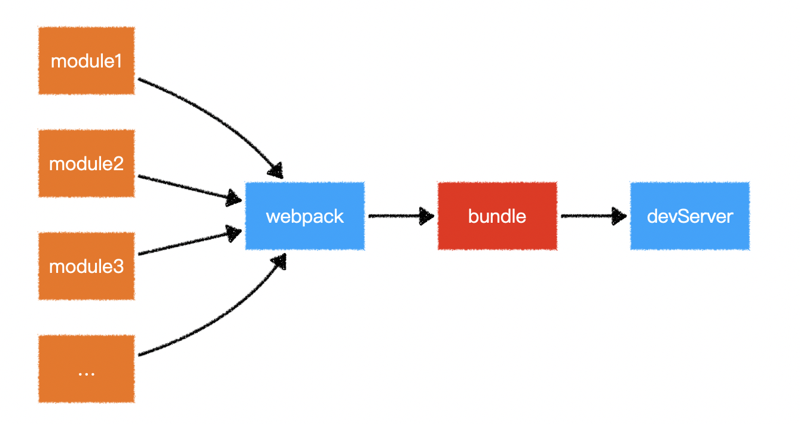
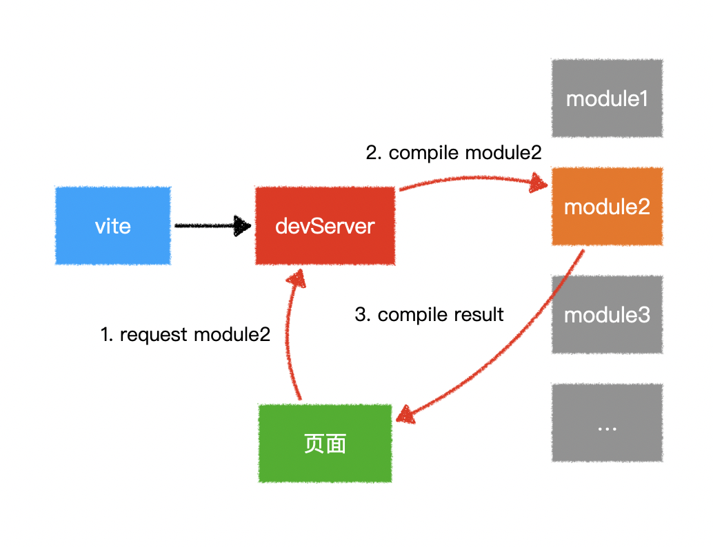

构建工具的作用
- 模块化开发支持: 支持直接从 node_modules 里引入代码 + 多种模块化支持
- 处理代码兼容性: 比如 babel 语法降级, less,ts 语法转换(不是构建工具做的, 构建工具将这些语法对应的处理工具集成进来自动化处理)
- 提高项目性能: 压缩文件, 代码分割
- 优化开发体验:
- 构建工具会帮你自动监听文件的变化, 当文件变化以后自动帮你调用对应的集成工具进行重新打包, 然后再浏览器重新运行（整个过程叫做热更新, hot replacement）
- 开发服务器: 跨域的问题, 用 react-cli create-react-element vue-cli 解决跨域的问题
构建工具他让我们可以不用每次都关心我们的代码在浏览器如何运行, 我们只需要首次给构建工具提供一个配置文件(这个配置文件也不是必须的, 如果你不给他 他会有默认的帮你去处理), 有了这个集成的配置文件以后, 我们就可以在下次需要更新的时候调用一次对应的命令就好了, 如果我们再结合热更新, 我们就更加不需要管任何东西。
主流构建工具
- webpack（*）
- vite（*）
- parcel
- esbuild（*）
- rollup（*）
- grunt
- gulp（*）
webpack 与 vite
webpack 支持多种模块化: 你的工程可能不只是跑在浏览器端，关注更多的兼容性
原代码
const lodash = webpack_require("lodash");
const Vue = webpack_require("vue");
// webpack 的一个转换结果
(function(modules) {
function webpack_require() {}
// 入口是 index.js
// 通过 webpack 的配置文件得来的: webpack.config.js ./src/index.js
modules[entry](webpack_require);
}({
"./src/index.js": (webpack_require) => {
const lodash = webpack_require("lodash");
const Vue = webpack_require("vue");
}
}))
两者比较
webpack 原理图

vite 原理图

webpack 会先打包，然后启动开发服务器，请求服务器时直接给予打包结果。
而 vite 是直接启动开发服务器，请求哪个模块再对该模块进行实时编译。（vite 是用 koa 启动的一个服务器）
由于现代浏览器本身就支持 ES Module，会自动向依赖的 Module 发出请求。vite 充分利用这一点，将开发环境下的模块文件，就作为浏览器要执行的文件，而不是像 webpack 那样进行打包合并。（webpack 是在浏览器中执行打包以后的 js，这就导致了利用 webpack 构建工具去开发一定比较慢）
由于 vite 在启动的时候不需要打包，也就意味着不需要分析模块的依赖、不需要编译，因此启动速度非常快。当浏览器请求某个模块时，再根据需要对模块内容进行编译。（修改下路径，解析下 vue 文件）这种按需动态编译的方式，极大的缩减了编译时间，项目越复杂、模块越多，vite 的优势越明显。（他会把 css 变成一个字符串，vue 文件会变成一个纯 js）
虽然不打包，请求的文件会比不打包要多，但请求的东西都在本地，所以依然非常快，而且依赖 es moudle 现代浏览器的情况也只是在开发人员的电脑上开发服务器的要求，大大增加了开发效率
在 HMR 方面，当改动了一个模块后，仅需让浏览器重新请求该模块即可，不像 webpack 那样需要把该模块的相关依赖模块全部编译一次，效率更高。
当需要打包到生产环境时，vite 使用传统的 rollup 进行打包，因此，vite 的主要优势在开发阶段。另外，由于 vite 利用的是 ES Module，因此在代码中不可以使用 CommonJS
浏览器与服务器
浏览器加载一个 index.js 以及例如 moment.js 是通过网络请求来获取的，而在服务器端是通过读本地文件来获取的（获取 node_module 的方式不同）
在浏览器和服务器的眼里，你的文件都是字符串
node 启动和 live server 的区别在哪里？
live server 的内部其实就是后端起 node 服务来读取你的文件
vite
介绍
没有 vite 之前，打包都是 webpack
vite 是用 koa 启动的一个服务器
安装 vite
yarn add vite
vite 的本质是用来代码处理的
vite 开箱即用
在默认情况下, 我们的 esmodule 去导入资源的时候, 要么是绝对路径, 要么是相对路径
既然我们现在的最佳实践就是 node_modules, 那为什么 es 官方在我们导入非绝对路径和非相对路径的资源的时候不默认帮我们 搜寻 node_modules 呢？
服务端找 common.js 不是通过网络请求去找的，而是找本地文件（可以做）
es module 找依赖是通过网络请求，将会去加载许多的依赖包，非常消耗性能（不能去做）
在没有 vite 的情况下，以下情况会报错
import \_ from "lodash"; // lodash 可能也 import 了其他的东西
vite 处理的过程中如果说看到了有非绝对路径或者相对路径的引用, 他则会尝试开启路径补全
import _ from "lodash"; // lodash可能也import了其他的东西
它会先找当前模块下的 node_modules,没找到会找上级目录，然后一直到 user/node_modules
vite 与 create vite 的区别
create-vite 内置了 vite
create-vite 是 vite 的脚手架，是 vite 的最佳配置
vite –> vue 团队的 create-vite —> vue 团队
vue 团队希望弱化 vite 的一个存在感, 但是我们去学习的时候不能弱化的,
create-vite(开发商)给你一套精装修模板(给你一套预设): 下载 vite, vue, post-css, less, babel 好了, 并且给你做好了最佳实践的配置
比如我们敲了yarn create vite
- 帮我们全局安装一个东西: create-vite (vite 的脚手架)
- 直接运行这个 create-vite bin 目录的下的一个执行配置
生产和开发
yarn dev —> 开发(每次依赖预构建所重新构建的相对路径都是正确的)
yarn dev === yarn dev -mode develop
vite 会全权交给一个叫做 rollup 的库去完成生产环境的打包
依赖预构建
因为不同的库有些的导出的方式是 commonjs,有些是 esmodule，有些是 es3,es5 立即执行函数的方式所以 vite 要进行依赖预构建
首先 vite 会找到对应的依赖, 然后调用 esbuild(对 js 语法进行处理的一个库), 将其他规范的代码转换成 esmodule 规范, 然后放到当前目录下的 node_modules/.vite/deps, 同时对 esmodule 规范的各个模块进行统一集成
他解决了 3 个问题:
- 不同的第三方包会有不同的导出格式(这个是 vite 没法约束人家的事情)
- 对路径的处理上可以直接使用.vite/deps, 方便路径重写
- 叫做网络多包传输的性能问题(也是原生 esmodule 规范不敢支持 node_modules 的原因之一), 有了依赖预构建以后无论他有多少的额外 export 和 import, vite 都会尽可能的将他们进行集成最后只生成一个或者几个模块
env 文件
vite 读取.env 文件
服务端
const baseEnvConfig = 读取.env的配置
const modeEnvConfig = 读取env相关配置
const lastEnvConfig = { ...baseEnvConfig, ...modeEnvConfig }
loadEnv会根据环境的不同，读取不一样的env配置项
// 当前env文件所在的目录
// 第二个参数不是必须要使用process.cwd(),
const env = loadEnv(mode, process.cwd(), "");
客户端
vite 会将对应的环境变量注入到 import.meta.env 里去
vite 做了一个拦截, 他为了防止我们将隐私性的变量直接送进 import.meta.env 中, 所以他做了一层拦截, 如果你的环境变量不是以 VITE 开头的（默认参数是 VITE）, 他就不会帮你注入到客户端中去, 如果我们想要更改这个前缀, 可以去使用 envPrefix 配置
vite.config.js
vite 运行在服务器，为什么 vite.config.js 可以书写成 esmodule 的形式?
这是因为 vite 他在读取这个 vite.config.js 的时候会率先 node 去解析文件语法, 如果发现你是 esmodule 规范会直接将你的 esmodule 规范进行替换变成 commonjs 规范，服务器拿到你的 js 是字符串他可以通过 replace 方法去替换
import { defineConfig } from "vite";
import path from "path";
export default defineConfig({
optimizeDeps: {
exclude: [], // 将指定数组中的依赖不进行依赖预构建
},
envPrefix: "ENV_", // 配置vite注入客户端环境变量校验的env前缀
css: { // 对css的行为进行配置
// modules配置最终会丢给postcss modules
- localConvention: 修改生成的配置对象的key的展示形式(驼峰还是中划线形式)
- scopeBehaviour: 配置当前的模块化行为是模块化还是全局化 (有hash就是开启了模块化的一个标志, 因为他可以保证产生不同的hash值来控制我们的样式类名不被覆盖)
- generateScopedName: 生成的类名的规则(可以配置为函数, 也可以配置成字符串规则: https://github.com/webpack/loader-utils#interpolatename)
- hashPrefix: 生成hash会根据你的类名 + 一些其他的字符串(文件名 + 他内部随机生成一个字符串)去进行生成, 如果你想要你生成hash更加的独特一点, 你可以配置hashPrefix, 你配置的这个字符串会参与到最终的hash生成, （hash: 只要你的字符串有一个字不一样, 那么生成的hash就完全不一样, 但是只要你的字符串完全一样, 生成的hash就会一样）
- globalModulePaths: 代表你不想参与到css模块化的路径
modules: { // 是对css模块化的默认行为进行覆盖
localsConvention: "camelCaseOnly", // 修改生成的配置对象的key的展示形式(驼峰还是中划线形式)
scopeBehaviour: "local", // 配置当前的模块化行为是模块化还是全局化 (有hash就是开启了模块化的一个标志, 因为他可以保证产生不同的hash值来控制我们的样式类名不被覆盖)
// generateScopedName: "[name]_[local]_[hash:5]" // https://github.com/webpack/loader-utils#interpolatename
// generateScopedName: (name, filename, css) => {
// // name -> 代表的是你此刻css文件中的类名
// // filename -> 是你当前css文件的绝对路径
// // css -> 给的就是你当前样式
// console.log("name", name, "filename", filename, "css", css); // 这一行会输出在哪？？？ 输出在node
// // 配置成函数以后, 返回值就决定了他最终显示的类型
// return `${name}_${Math.random().toString(36).substr(3, 8) }`;
// }
hashPrefix: "hello", // 生成hash会根据你的类名 + 一些其他的字符串(文件名 + 他内部随机生成一个字符串)去进行生成, 如果你想要你生成hash更加的独特一点, 你可以配置hashPrefix, 你配置的这个字符串会参与到最终的hash生成, （hash: 只要你的字符串有一个字不一样, 那么生成的hash就完全不一样, 但是只要你的字符串完全一样, 生成的hash就会一样）
globalModulePaths: ["./componentB.module.css"], // 代表你不想参与到css模块化的路径
},
preprocessorOptions: { // key + config key代表预处理器的名
less: { // 整个的配置对象都会最终给到less的执行参数（全局参数）中去
// 在webpack里就给less-loader去配置就好了
math: "always",
globalVars: { // 全局变量
mainColor: "red",
}
},
},
devSourcemap: true, // 开启css的sourceMap（文件索引）
postcss: {}, // 配置postcss相关
},
resolve: {
alias: {
"@": path.resolve(__dirname, "./src"), // 设置别名, 以后我们在其他组件中可以使用@来代替src这个目录
}
},
build: { // 构建生产包时的一些配置策略
rollupOptions: { // 配置rollup的一些构建策略
output: { // 控制输出
// 在rollup里面, hash代表将你的文件名和文件内容进行组合计算得来的结果
assetFileNames: "[hash].[name].[ext]"
}
},
assetsInlineLimit: 4096000, // 4000kb
outDir: "dist", // 配置输出目录
assetsDir: "static", // 配置输出目录中的静态资源目录
emptyOutDir: true, // 清除输出目录中的所有文件
}
plugins: [
MyViteAliases(),
viteCompression(),
// ViteAliases()
// createHtmlPlugin({
// inject: {
// data: {
// title: "主页"
// }
// }
// })
CreateHtmlPlugin({
inject: {
data: {
title: "主页2"
}
}
}), // serve === 开启开发服务器
// viteMockServe()
VitePluginMock()
],
});
处理 css

vite 加入模块化的方法
postcss
对标 babel
我们写的 js 代码(怎么爽怎么来) –> babel –> 将最新的 ts 语法进行转换 js 语法 –> 做一次语法降级 –> 浏览器客户端去执行
babel –> 帮助我们让 js 执行起来万无一失
先通过 less 进行编译，比如解开嵌套，变量等，然后再交给 postcss 处理，postcss 是后处理器
我们写的 css 代码(怎么爽怎么来) –> postcss —> less –> 再次对未来的高级 css 语法进行降级 –> 前缀补全 –> 浏览器客户端
目前来说 less 和 sass 等一系列预处理器的 postcss 插件已经停止维护了 less 插件 你自己去用 less 和 sass 编译完了, 然后你把编译结果给我
所以业内就产生了一个新的说法: postcss 是后处理器** less 的 postcss 的插件就 ok 了
插件
vite 会在生命周期的不同阶段中去调用不同的插件以达到不同的目的，可以引入社区插件或者自己写插件来进行自定义配置
vite 的 css module 和 Scoped CSS 的两者区别
| CSS Modules | Scoped CSS |
|---|---|
| 需要在 vue.config.js 中额外配置 | Vue Loader 默认支持，无需额外配置 |
| 通过根据配置的类命名规则，为元素生成独一无二的类名来实现作用域隔离 | 通过给元素自定义 hash 属性，再使用属性选择器选中元素来实现作用域隔离 |
| 在 style 标签中声明 module | 在 style 标签中声明 scoped |
| 支持导入其他 module 的样式，支持样式组合 | / |
| 通过:global()来解除作用域的隔离，使样式在全局生效 | 1. 可以定义全局样式，使样式不受作用域约束；2. 可以通过深度作用选择器命中子组件，从而控制子组件的样式 |
css module
<template>
<div class=".src-views-login-Index__example">hi</div>
</template>
vue scoped css
<style>
.example[data-v-f3f3eg9] {
color: red;
}
</style>
<template>
<div class="example" data-v-f3f3eg9>hi</div>
</template>
webpack
webpack 编译原理
webpack 的编译原理, AST 抽象语法分析的工具 分析出你写的这个 js 文件有哪些导入和导出操作
因为 webpack 支持多种模块化, 他一开始必须要统一模块化代码, 所以意味着他需要将所有的依赖全部读一遍（webpack 的打包和热更新的速度是慢的）
webpack 打包原理
webpack 打包原理是将根据文件间的依赖关系对其进行静态分析，然后将这些模块按指定规则生成静态资源，当 webpack 处理程序时，会递归地构建一个依赖关系图，其中包含应用程序需要的每个模块，然后将所所有这些模块打包成 bundle。
将根据文件间的依赖关系对其进行静态分析，然后将这些模块按指定规则生成静态资源，当 webpack 处理程序时，会递归地构建一个依赖关系图(dependency graph)，其中包含应用程序需要的每个模块，然后将所有这些模块打包成一个或多个 bundle。
webpack 只是一个打包模块的机制，只是把依赖的模块转化成可以代表这些包的静态文件。并不是什么 commonjs 或者 amd 之类的模块化规范。webpack 就是识别你的入口文件。识别你的模块依赖，来打包你的代码。
至于你的代码使用的是 commonjs 还是 amd 或者 es6 的 import。webpack 都会对其进行分析。来获取代码的依赖。
AMD、CMD、CommonJS 和 ES6 Import 四个都是引用 js 文件的方法，具体实现和使用方式不同
webpack 做的就是分析代码。转换代码，编译代码，输出代码。webpack 本身是一个 node 的模块，所以 webpack.config.js 是以 commonjs 形式书写的(node 中的模块化是 commonjs 规范的)
webpack 中每个模块有一个唯一的 id，是从 0 开始递增的。整个打包后的 bundle.js 是一个匿名函数自执行。参数则为一个数组。数组的每一项都为个 function。function 的内容则为每个模块的内容，并按照 require 的顺序排列。
1、Entry
入口起点(entry point)指示 webpack 应该使用哪个模块，来作为构建其内部依赖图的开始。进入入口起点后，webpack 会找出有哪些模块和库是入口起点（直接和间接）依赖的。每个依赖项随即被处理，最后输出到称之为 bundles 的文件中。
2、Output
output 属性告诉 webpack 在哪里输出它所创建的 bundles，以及如何命名这些文件，默认值为 ./dist。基本上,整个应用程序结构，都会被编译到指定的输出路径的文件夹中。
3、Module
模块，在 Webpack 里一切皆模块，一个模块对应着一个文件。Webpack 会从配置的 Entry 开始递归找出所有依赖的模块。
4、Chunk
代码块，一个 Chunk 由多个模块组合而成，用于代码合并与分割。
5、Loader
loader 让 webpack 能够去处理那些非 JavaScript 文件（webpack 自身只理解 JavaScript）。
loader 可以将所有类型的文件转换为 webpack 能够处理的有效模块，然后就可以利用 webpack 的打包能力，对它们进行处理。
本质上，webpack loader 将所有类型的文件，转换为应用程序的依赖图（和最终的 bundle）可以直接引用的模块。
const { resolve } = require('path');
const HtmlWebpackPlugin = require('html-webpack-plugin');
module.exports = {
entry: './src/js/index.js', //入口
output: { //出口
filename: 'js/[name].js',
path: resolve(__dirname, 'build')
},
module: { //模块
rules: [
{
test: /\.css$/,
use: ['style-loader', 'css-loader']
}
]
},
plugins: [new HtmlWebpackPlugin()], //插件
mode: 'development', //模式
resolve: { //除css以外
alias: {
$css: resolve(__dirname, 'src/css')
},
extensions: ['.js', '.json', '.jsx', '.css'],
modules: [resolve(__dirname, '../../node_modules'), 'node_modules']
},
devServer: { //服务器配置
// 运行代码的目录
contentBase: resolve(__dirname, 'build'),
// 监视 contentBase 目录下的所有文件，一旦文件变化就会 reload
watchContentBase: true,
watchOptions: {
// 忽略文件
ignored: /node_modules/
},
// 启动gzip压缩
compress: true,
// 端口号
port: 5000,
// 域名
host: 'localhost',
// 自动打开浏览器
open: true,
// 开启HMR功能
hot: true,
// 不要显示启动服务器日志信息
clientLogLevel: 'none',
// 除了一些基本启动信息以外，其他内容都不要显示
quiet: true,
// 如果出错了，不要全屏提示~
overlay: false,
// 服务器代理 --> 解决开发环境跨域问题
proxy: {
// 一旦devServer(5000)服务器接受到 /api/xxx 的请求，就会把请求转发到另外一个服务器(3000)
'/api': {
target: 'http://localhost:3000',
// 发送请求时，请求路径重写：将 /api/xxx --> /xxx （去掉/api）
pathRewrite: {
'^/api': ''
}
}
}
}
};
优缺点
优点
- 专注于处理模块化的项目，能做到开箱即用，一步到位
- 可通过
plugin扩展，完整好用又不失灵活 - 使用场景不局限于
web开发 - 社区庞大活跃，经常引入紧跟时代发展的新特性，能为大多数场景找到已有的开源扩展
- 良好的开发体验
缺点
只能用于采用模块化开发的项目
npm 打包时需要注意哪些？如何利用 webpack 来更好的构建？
npm 是目前最大的 JavaScript 模块仓库，里面有来自全世界开发者上传的可复用模块。你可能只是 JS 模块的使用者，但是有些情况你也会去选择上传自己开发的模块。 关于 NPM 模块上传的方法可以去官网上进行学习，这里只讲解如何利用 webpack 来构建。
NPM 模块需要注意以下问题：
要支持 CommonJS 模块化规范，所以要求打包后的最后结果也遵守该规则。
Npm 模块使用者的环境是不确定的，很有可能并不支持 ES6，所以打包的最后结果应该是采用 ES5 编写的。并且如果 ES5 是经过转换的，请最好连同 SourceMap 一同上传。
Npm 包大小应该是尽量小（有些仓库会限制包大小）
发布的模块不能将依赖的模块也一同打包，应该让用户选择性的去自行安装。这样可以避免模块应用者再次打包时出现底层模块被重复打包的情况。
UI 组件类的模块应该将依赖的其它资源文件，例如.css 文件也需要包含在发布的模块里。
基于以上需要注意的问题，我们可以对于 webpack 配置做以下扩展和优化：
CommonJS 模块化规范的解决方案： 设置 output.libraryTarget=’commonjs2’使输出的代码符合 CommonJS2 模块化规范，以供给其它模块导入使用
输出 ES5 代码的解决方案：使用 babel-loader 把 ES6 代码转换成 ES5 的代码。再通过开启 devtool: ‘source-map’输出 SourceMap 以发布调试。
Npm 包大小尽量小的解决方案：Babel 在把 ES6 代码转换成 ES5 代码时会注入一些辅助函数，最终导致每个输出的文件中都包含这段辅助函数的代码，造成了代码的冗余。解决方法是修改.babelrc 文件，为其加入 transform-runtime 插件
不能将依赖模块打包到 NPM 模块中的解决方案：使用 externals 配置项来告诉 webpack 哪些模块不需要打包。
对于依赖的资源文件打包的解决方案：通过 css-loader 和 extract-text-webpack-plugin 来实现
什么是 loader ? 什么是 plugin ?
【Loader】：用于对模块源码的转换，loader 描述了 webpack 如何处理非 javascript 模块，并且在 buld 中引入这些依赖。loader 可以将文件从不同的语言（如 TypeScript）转换为 JavaScript，或者将内联图像转换为 data URL。比如说：CSS-Loader，Style-Loader 等。
【Plugin】：目的在于解决 loader 无法实现的其他事，从打包优化和压缩，到重新定义环境变量，功能强大到可以用来处理各种各样的任务。webpack 提供了很多开箱即用的插件：CommonChunkPlugin 主要用于提取第三方库和公共模块，避免首屏加载的 bundle 文件，或者按需加载的 bundle 文件体积过大，导致加载时间过长，是一把优化的利器。而在多页面应用中，更是能够为每个页面间的应用程序共享代码创建 bundle。
loader：模块转换器，webpack 将一切文件视为模块，但 webpack 只能解析 JavaScript 文件，而 loader 作用是让 webpack 拥有了加载 和 解析非 JavaScript 文件的能力。
plugin：在 webpack 构建流程中的特定时机注入扩展逻辑，让它具有更多的灵活性。在 webpack 运行的生命周期中会广播出许多事件，plugin 可以监听这些事件，在合适的时机通过 webpack 提供的 API 改变输出结果。
用法的区别：
Loader 在 module.rules 中配置，也就是说他作为模块的解析规则而存在。 类型为数组，每一项都是一个 Object，里面描述了对于什么类型的文件（test），使用什么加载(loader)和使用的参数（options）Plugin 在 plugins 中单独配置。 类型为数组，每一项是一个 plugin 的实例，参数都通过构造函数传入。
有哪些常见的 Loader ？他们是解决什么问题的？
file-loader：把文件输出到一个文件夹中，在代码中通过相对 URL 去引用输出的文件url-loader：和 file-loader 类似，但是能在文件很小的情况下以 base64 的方式把文件内容注入到代码中去source-map-loader：加载额外的 Source Map 文件，以方便断点调试image-loader：加载并且压缩图片文件babel-loader：把 ES6 转换成 ES5css-loader：加载 CSS，支持模块化、压缩、文件导入等特性style-loader：把 CSS 代码注入到 JavaScript 中，通过 DOM 操作去加载 CSS。eslint-loader：通过 ESLint 检查 JavaScript 代码svg-inline-loader：将压缩后的 SVG 内容注入代码中json-loader : 加载 JSON 文件（默认包含）ts-loader : 将 TypeScript 转换成 JavaScriptawesome-typescript-loader：将 TypeScript 转换成 JavaScript，性能优于 ts-loadersass-loader：将 CSS 代码注入 JavaScript 中，通过 DOM 操作去加载 CSSpostcss-loader：扩展 CSS 语法，使用下一代 CSS，可以配合 autoprefixer 插件自动补齐 CSS3 前缀tslint-loader：通过 TSLint 检查 TypeScript 代码vue-loader：加载 Vue.js 单文件组件
有哪些常见的 Plugin？他们是解决什么问题的？
define-plugin：定义环境变量commons-chunk-plugin：提取公共代码terser-webpack-plugin : 支持压缩 ES6 (Webpack4)ignore-plugin：忽略部分文件html-webpack-plugin：简化 HTML 文件创建 (依赖于 html-loader)web-webpack-plugin：可方便地为单页应用输出 HTML，比 html-webpack-plugin 好用mini-css-extract-plugin : 分离样式文件，CSS 提取为独立文件，支持按需加载serviceworker-webpack-plugin：为网页应用增加离线缓存功能clean-webpack-plugin : 删除打包文件happypack：实现多线程加速编译
如何利用 webpack 来优化前端性能？
用 webpack 优化前端性能是指优化 webpack 的输出结果，让打包的最终结果在浏览器运行快速高效。
1.压缩代码。删除多余的代码、注释、简化代码的写法等等方式。
用 UglifyJsPlugin和ParallelUglifyPlugin 压缩 JS 文件
用 mini-css-extract-plugin 压缩 CSS
- 利用 CDN 加速。在构建过程中，将引用的静态资源路径修改为 CDN 上对应的路径。可以利用
webpack对于output参数和各loader的publicPath参数来修改资源路径 - 删除死代码。JS 用
Tree Shaking，CSS 需要使用Purify-CSS - 提取公共代码。用
CommonsChunkPlugin插件
分别介绍 bundle，chunk，module 是什么
bundle：是由 webpack 打包出来的文件，chunk：代码块，一个 chunk 由多个模块组合而成，用于代码的合并和分割。module：是开发中的单个模块，在 webpack 的世界，一切皆模块，一个模块对应一个文件，webpack 会从配置的 entry 中递归开始找出所有依赖的模块。